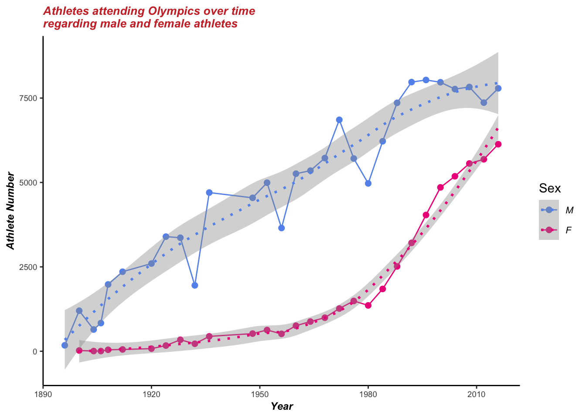

Chapter 6 Q4: What is the Participation Ratio of Men to Women changes over time? Is this ratio increased or decreased?
6.1 Picture 7
For a long time in history, the society of different countries has been sexist in many aspects. Even the inclusion of women in the Olympics, this global sports event, is affected.
When the first modern Olympics was held in 1896 in Athens, Greece, women were deliberately barred. At the time, the founder of the IOC, Baron Pierre de Coubertin, argued an Olympics with women would be “impractical, uninteresting, unaesthetic and indecent.” The Games, he said, were created for “the solemn and periodic exaltation of male athleticism” with “female applause as a reward.”
Under pressure from athletes such as French rower Alice Milliat who even launched a separate Olympics for women, the IOC began including more female events. In 2012, the global sporting body allowed women to compete in all sports on the Olympic program, and it was only in 2014 that it was committed to gender parity at the Games.
As the world is still developing, more and more people began to pay attention to this issue, and the women’s status began to rise, which can be shown in the history of the Olympics. sexism problem in Olympics

In this Analysis, we draw an animated line graph to show the total number of Male and Female Participants in different seasons of the Olympic Games over the years.
We can see that as time passed, at first, there were almost no female participants in the Olympics till the 1920s, and nearly all participants were male.
After the 1920s, the participation of females slightly increased. Moreover, after the 1950s, the number of female participants started snowballing.